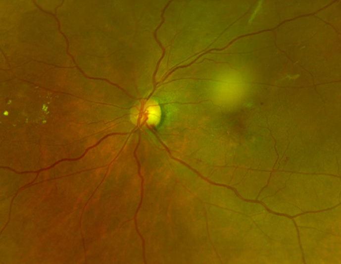
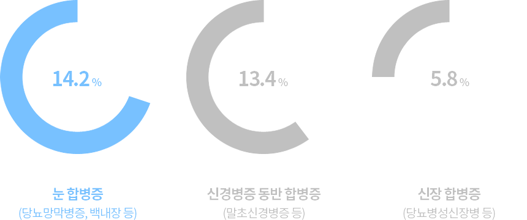
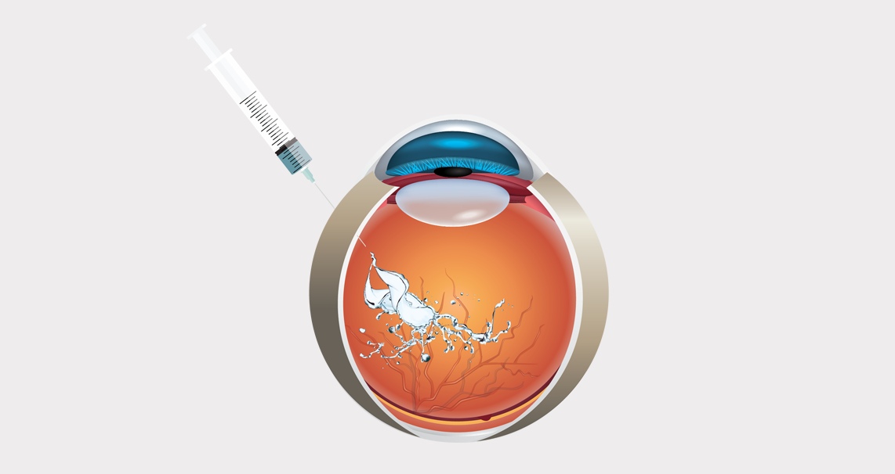
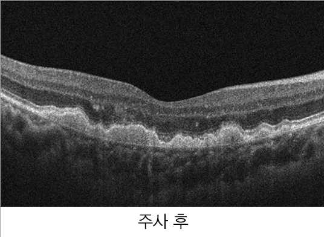
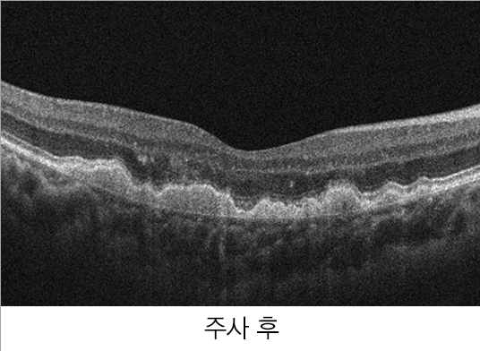
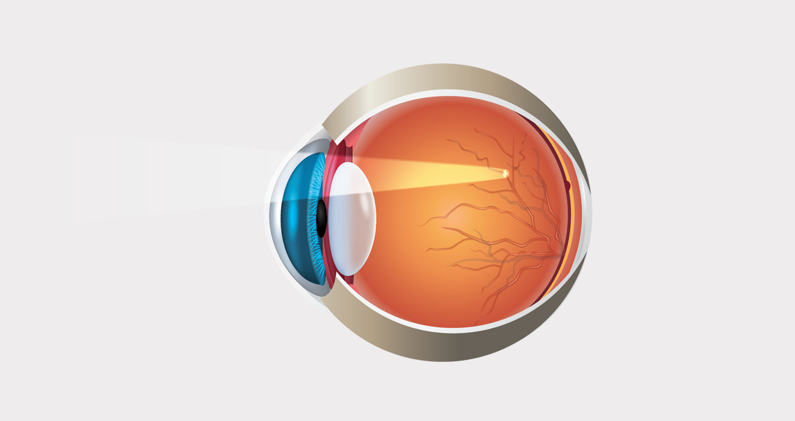
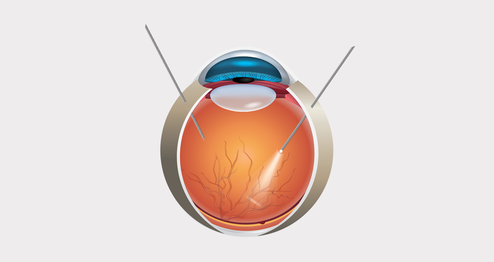
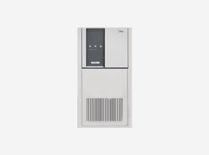
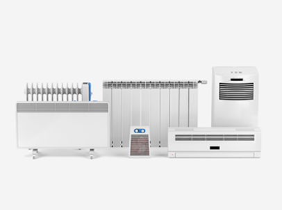
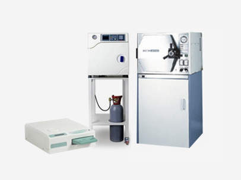

당뇨망막병증
실명을 유발하는 3대질환은
정기적인 검진이 중요합니다
정기적인 검진이 중요합니다
실명 부르는 망막질환 환자 급증
당뇨병으로 고혈당 상태가 지속되면 눈의 망막에 있는 모세 혈관이
파괴되면서 당뇨망막병증이 시작됩니다.
파괴된 혈관에서 삼출물이 흘러나오면 망막 부종을 유발하여 시력을 저하시킬 뿐 아니라, 새로 자라난 혈관은
약하기 때문에 쉽게 터져 안구내 출혈을 일으켜서 급격하게 시력 상실을 유발할 수 있습니다.
파괴된 혈관에서 삼출물이 흘러나오면 망막 부종을 유발하여 시력을 저하시킬 뿐 아니라, 새로 자라난 혈관은
약하기 때문에 쉽게 터져 안구내 출혈을 일으켜서 급격하게 시력 상실을 유발할 수 있습니다.
정상 안구
당뇨망막병증 안구
당뇨망막병증 원인
당뇨병으로 고혈당 상태가 지속되면 눈 속 망막에 있는 모세혈관이
파괴되고 새로운 혈관을 만들어 냅니다.
이렇게 생겨난 혈관은 아주 약해서 쉽게 출혈되고 이로 인해 망막조직이 부어 시력이 떨어져 결국
실명 위험이 있는 당뇨망막병증이 됩니다.
이렇게 생겨난 혈관은 아주 약해서 쉽게 출혈되고 이로 인해 망막조직이 부어 시력이 떨어져 결국
실명 위험이 있는 당뇨망막병증이 됩니다.
정상 시야
당뇨망막병증 시야
당뇨망막병증 종류
당뇨망막병증은 신생혈관의 유무에 따라서 분류가 됩니다.

비증식성 당뇨망막병증
대부분의 당뇨망막병증은 비증식성으로, 망막 모세혈관이
작은 풍선처럼 커져 꽈리모양으로 변형됩니다.
일반적으로 비증식성은 실명을 초래하지 않으나, 모세혈관벽이
약해져 물이 새어나가면 황반이 부어 시력이 떨어집니다.
비증식성의 대부분은 치료가 필요없지만, 황반부종이 관찰되면
반드시 치료해야 합니다.
작은 풍선처럼 커져 꽈리모양으로 변형됩니다.
일반적으로 비증식성은 실명을 초래하지 않으나, 모세혈관벽이
약해져 물이 새어나가면 황반이 부어 시력이 떨어집니다.
비증식성의 대부분은 치료가 필요없지만, 황반부종이 관찰되면
반드시 치료해야 합니다.
증식성 당뇨망막병증
증식성 당뇨망막병증은 망막 혈액이 원활히 공급되지 않아
나타난 신생혈관이 시력의 장애를 초래하는 질환입니다.
신생혈관은 지속적으로 유리체 수축을 일으키고, 망막이
찢어지는 망막박리의 가능성이 있습니다.
심하면 홍채에도 신생혈관이 생겨 녹내장을 유발할 수
있습니다.
나타난 신생혈관이 시력의 장애를 초래하는 질환입니다.
신생혈관은 지속적으로 유리체 수축을 일으키고, 망막이
찢어지는 망막박리의 가능성이 있습니다.
심하면 홍채에도 신생혈관이 생겨 녹내장을 유발할 수
있습니다.
당뇨환자 중 눈 합병증 진료비율
아무리 철저히 혈당관리를 해도
대부분의 환자에게서 당뇨망막병증이
발생한다고 알려져 있습니다.

초기에 자각하기 어려운 당뇨망막병증 증상
시력 저하
눈부심(광시증)
시야 흐려짐
비문증
변시증
당뇨망막병증 특징
당뇨망막병증이 진행될 때까지 증상은 미미합니다.
인체가 느끼기에는 컨디션에 따른 시력변화상태라고 느껴지는 경우가 많습니다.
인체가 느끼기에는 컨디션에 따른 시력변화상태라고 느껴지는 경우가 많습니다.
두 눈에 대칭적으로 발생하는 당뇨망막병증은
망막혈관의 구조적 변화가 망막에만 발생되는 경우로
비증식 당뇨망막병증과 비정상적인 신생혈관의 생성으로 유리체 출혈을 형성하여 시력을 떨어뜨리는
증식 당뇨망막병증이 있습니다.
비증식 당뇨망막병증과 비정상적인 신생혈관의 생성으로 유리체 출혈을 형성하여 시력을 떨어뜨리는
증식 당뇨망막병증이 있습니다.
당뇨병 진단 후 주기적인 안저검사를 통해 망막의 변화를 관찰해야
합니다.
경우에 따라 3개월 또는 1년의 정기적인 관찰이 필요하며, 임산부의 경우에는 3개월 마다,
출산 후 3개월 이내에 진료를 받아야 합니다.
경우에 따라 3개월 또는 1년의 정기적인 관찰이 필요하며, 임산부의 경우에는 3개월 마다,
출산 후 3개월 이내에 진료를 받아야 합니다.
당뇨망막병증의 치료
항체 주사 치료
레이저 광응고술
유리체절제술
항체 주사 치료
항체주사치료는 눈 속의 출혈 위험이 있는 비정상적인 신생혈관의 항체를
눈에 직접 주사하여 혈관의 출혈을 막고 신생혈관
생성 자체를 억제시켜 시력을 회복하는 가장 효과적인 치료방법입니다.
항체주사는 부분마취로 시행되며, 5분 정도면 주사 치료가 끝나므로 전신상태가 좋지 못한 환자들도 치료받을 수 있습니다.

생성 자체를 억제시켜 시력을 회복하는 가장 효과적인 치료방법입니다.
항체주사는 부분마취로 시행되며, 5분 정도면 주사 치료가 끝나므로 전신상태가 좋지 못한 환자들도 치료받을 수 있습니다.
 

레이저 광응고술
망막에 수백개의 응고반점을 2~4회에 걸쳐서 만들어 치료합니다. 이미
출혈이나 망막박리가 진행된 경우에는 시행이 불가능 합니다.
부작용은 대개 미미하나, 치료 직후 흐리게 보이거나 주변부 시야가 좁아질 수 있습니다. 망막 이측 혈관궁 바깥 부위에 전반적으로
레이저를 조사해 심한 유리체 출혈 및 견인성 망막박리를 감소시킬 수 있습니다.

부작용은 대개 미미하나, 치료 직후 흐리게 보이거나 주변부 시야가 좁아질 수 있습니다. 망막 이측 혈관궁 바깥 부위에 전반적으로
레이저를 조사해 심한 유리체 출혈 및 견인성 망막박리를 감소시킬 수 있습니다.
유리체절제술
유리체 절제술은 혼탁한 유리체를 제거하고 맑은 역체로 바꾸는 동시에
망막에 생긴 새로운 혈관과 혈관을 싸고 있는 막을
제거하는 수술입니다. 유리체절제술은 섬세하고 정교한 수술인 만큼 망막에 손상을 입히지 않도록 경험이 풍부한 의사에게
수술을 받아야 합니다. 수술 결과를 끌어올리기 위해 수술 중 혹은 수술 후 추가적인 광응고치료를 시행할 수 있습니다.

제거하는 수술입니다. 유리체절제술은 섬세하고 정교한 수술인 만큼 망막에 손상을 입히지 않도록 경험이 풍부한 의사에게
수술을 받아야 합니다. 수술 결과를 끌어올리기 위해 수술 중 혹은 수술 후 추가적인 광응고치료를 시행할 수 있습니다.
에스안과의 안전한 수술시스템

UPS 무정전 시스템
정전 등 천재지변의 상황이 발생해도
전원을 안전하게 공급할 수 있는
장치를 보유
전원을 안전하게 공급할 수 있는
장치를 보유

365일 항온 학습
수술실은 가장 적합한 온도인 섭씨
20도와 최적 습도 40%를
항상 일정하게 유지
20도와 최적 습도 40%를
항상 일정하게 유지

완벽한 멸균 시스템
수술실은 항상 완벽한
멸균관리를 진행하며
청결하게 관리
멸균관리를 진행하며
청결하게 관리
당뇨망막병증 Q&A
당뇨망막병증은 당뇨 환자라면 모두 생기나요?
당뇨망막병증은 당뇨 환자라면 모두 생긴다고 말할 수는 없습니다만,
당뇨 유병기간이 길거나 나이가 들수록 발병위험이 증가합니다.
대개 당뇨병이 발병하여 20년이 지나면 제1형 당뇨병 환자의 99%, 제 2형 환자의 60%에서 망막병증이 생기는 것으로 밝혀져 있습니다.
당뇨망막병증은 발병하면 당뇨병이 조절된다고 하더라도 병의 증세가 나아지기를 기대하기 힘들며 제1형의 86%, 제2형의 33%에서
실명을 가져온다고 하니 각별한 주의가 필요합니다.
대개 당뇨병이 발병하여 20년이 지나면 제1형 당뇨병 환자의 99%, 제 2형 환자의 60%에서 망막병증이 생기는 것으로 밝혀져 있습니다.
당뇨망막병증은 발병하면 당뇨병이 조절된다고 하더라도 병의 증세가 나아지기를 기대하기 힘들며 제1형의 86%, 제2형의 33%에서
실명을 가져온다고 하니 각별한 주의가 필요합니다.
당뇨망막병증을 방치하면 어떻게 되나요?
당뇨망막병증은 질병이 많이 진행될 때까지 증상을 느끼지 못하는
경우가 많습니다. 초기에는 비증식성 당뇨망막병증으로 시작하는데
이 때 병을 방치하게 되면 대부분 증식성 당뇨망막병증으로 진행하게 됩니다. 증식성 당뇨망막병증은 망막에 비정상적인 신생혈관들이
자라나 망막 내 출혈을 일으키고 망막박리와 같은 부수적인 합병증을 동반하여 결국 실명에 이를 수 있어 주의가 필요합니다.
이 때 병을 방치하게 되면 대부분 증식성 당뇨망막병증으로 진행하게 됩니다. 증식성 당뇨망막병증은 망막에 비정상적인 신생혈관들이
자라나 망막 내 출혈을 일으키고 망막박리와 같은 부수적인 합병증을 동반하여 결국 실명에 이를 수 있어 주의가 필요합니다.
당뇨망막병증을 판단할 때 어떤 검사를 하나요?
당뇨망막병증으로 인해 시력의 저하가 왔는지 시력을 먼저 측정하고
동공을 크게 만들어 세극등을 이용해 망막을 검사합니다. 필요에
따라
형광안저촬영 (특수카메라를 이용하여 망막사진을 얻는 검사로 망막혈관을 분명히 볼 수 있도록 도와줌) 및 광간섭단층촬영인 OCT 촬영을
추가로 진행하여 병의 진행 상태를 확인할 수 있습니다.
형광안저촬영 (특수카메라를 이용하여 망막사진을 얻는 검사로 망막혈관을 분명히 볼 수 있도록 도와줌) 및 광간섭단층촬영인 OCT 촬영을
추가로 진행하여 병의 진행 상태를 확인할 수 있습니다.
당뇨망막병증이 있을 때 운동 시 주의사항이 있나요?
적당한 운동은 당뇨를 관리하고 혈류를 개션시켜 당뇨와 망막병증의
개선에 긍정적인 영향을 줄 수 있지만 심한 당뇨망막병증이 있을
경우에 고강도 운동을 했을 시 망막의 출혈로 이어져 실명 위험이 커질 수 있으므로 격렬한 운동은 피해야 합니다. 달리기, 자전거 타기,
수영 등 유산소 운동이 적절하며 운동 전 담당 의사와 운동의 강도에 대해 의논해야 합니다.
경우에 고강도 운동을 했을 시 망막의 출혈로 이어져 실명 위험이 커질 수 있으므로 격렬한 운동은 피해야 합니다. 달리기, 자전거 타기,
수영 등 유산소 운동이 적절하며 운동 전 담당 의사와 운동의 강도에 대해 의논해야 합니다.
당뇨망막병증이 있을 때 임신을 해도 괜찮나요?
당뇨병은 임신 중 산모 뿐 아니라 태아에게도 좋지 않은 영향을 미칠
수 있으므로 당뇨병이 있는 여성의 임신은 신중해야 합니다. 산모가
당뇨를 앓은 유병기간이 길수록 당뇨망막병증 발병 위험이 높으므로 당뇨병이 있다면 임신 전 전체적인 안과검사를 받아야 합니다.
임신을 한 경우에는 첫 3개월 내 안과 검진을 받은 후 임신 기간 동안 3개월마다, 출산 후에는 1년까지 검사를 받아야 합니다.
당뇨를 앓은 유병기간이 길수록 당뇨망막병증 발병 위험이 높으므로 당뇨병이 있다면 임신 전 전체적인 안과검사를 받아야 합니다.
임신을 한 경우에는 첫 3개월 내 안과 검진을 받은 후 임신 기간 동안 3개월마다, 출산 후에는 1년까지 검사를 받아야 합니다.
안전하고 효과적인 망막질환 치료, 에스안과에서 안심하고 치료하세요.